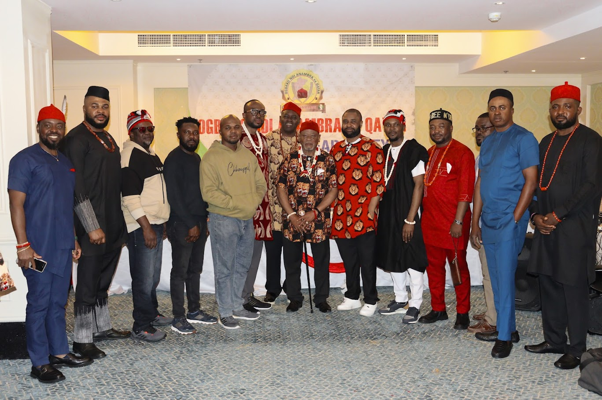

Heritage & Tradition
Carrying Anambra's culture across the miles
From masquerade performances to festival celebrations, this is how we keep home alive in Doha.
Why Culture Matters
Tradition is not nostalgia — it is identity
Living far from Anambra State does not mean living far from who we are. ONA exists not only as a welfare union, but as a custodian of the customs, masquerade traditions, music, and festival practices that define us as Ndi Anambra. We carry these traditions deliberately, so that our children growing up in Qatar know their roots as surely as if they were raised in the villages of Anambra North, Central, or South.
Cultural Day celebrations, New Yam festival observances, traditional attire showcases, and our masquerade group's outings are not performances for their own sake — they are living history, passed hand to hand, generation to generation, even here, thousands of miles from home.

Our Masquerade Group
The ONA Masquerade Group
At the heart of ONA's cultural life is our own masquerade group — a vibrant display of costume, drumming, and ancestral spirit that brings the energy of an Anambra village square to Doha. The group performs at our Cultural Day, New Yam festival, and major union milestones, and represents ONA at wider Nigerian community and multicultural events across Qatar.
Authentic Tradition
Costumes, movements, and rhythms rooted in the masquerade customs of Anambra State, performed with the respect and discipline the tradition demands.
Community Spirit
Every outing draws members of all ages together — elders narrating the meaning behind each masquerade, children watching wide-eyed, just as it would be back home.
Open for Booking
We are proud to bring the masquerade group beyond our own events — available to perform at weddings, naming ceremonies, cultural festivals, and community functions across Qatar.
Recent Outings
Photos from the field
A look at the masquerade group and our cultural celebrations in action.


Photos shown here are placeholders. Add real outing photos to assets/culture/ and update the file names above — once in place, this note can be removed.
Watch
Videos from recent outings
Highlights from the masquerade group and cultural events, in motion.
Cultural Day Highlights
Watch the highlights from our Cultural Day celebration.
Masquerade Performance
Replace this block with an embedded video (e.g. YouTube/Vimeo iframe) once footage is ready.
New Yam Festival
Video slots above are placeholders. When ready, swap each placeholder div for an <iframe> embed from YouTube or Vimeo, keeping the same aspect-ratio: 16/9 so the layout stays consistent.